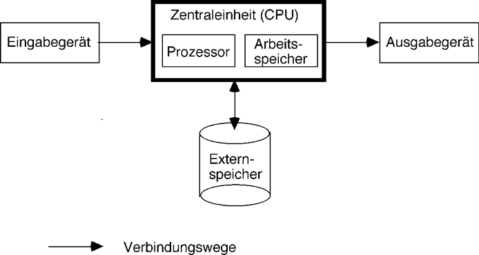
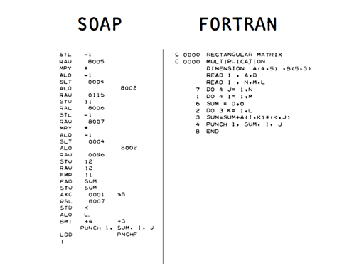
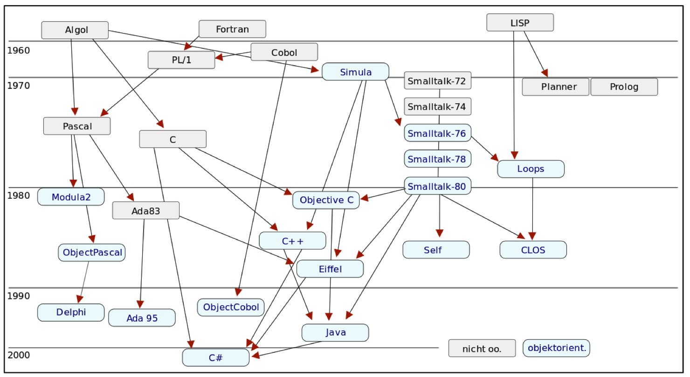

Einführung
Einführung in die Programmierung
Programme für Computer
Ein Programm ist eine Folge von Anweisungen (Befehlen) an eine Maschine (Rechner, Computer), die von dieser „verstanden” wird und damit ausgeführt werden kann.
Aufbau von Computern

Computer im Wandel der Jahrzehnte

- Ein iPhone enthält ca. 1 Milliarde Transistoren.
- Um diese Rechenleistung mit der Technologie der 1950er Jahre zu
bauen, bräuchte es:
- 1 Milliarde Elektronenröhren
- 170 vehicle assembly buildings, um sie unterzubringen
- 1 Terawatt Leistung, um sie zu betreiben
- das entspräche 500 2-Gigawatt-Kernkraftwerken für ca. 50 Milliarden Euro
- das entspräche dem Weltbruttosozialprodukt von 60 Jahren
- Smartphones realisieren eine Steigerung der Rechenleistung um den Faktor \(10^{22}\) verglichen mit der Technologie vor 60 Jahren.
Welche Fortschritte gibt es in dieser Zeit in der Software?
Was können Computer?
- Problem: Computer können nur sehr simple Dinge tun.
- Beispiel: Der Computer soll 10 mal „piepen”.
Pseudo-Maschinenprogramm
put the number 10 into memory location 0 a if contents of location 0 is negative go to line b beep subtract 1 from the number in location 0 go to line a b ... rest of program ...- Man stelle sich vor, auf diese Weise ein Programm für die Tourenplanung einer Spedition zu schreiben.
- Fällt Ihnen an dem Programm etwas auf?
Besser wäre, man könnte z. B. schreiben:
(dotimes [n 10] (beep))
Programmiersprachen
Was ist eine Programmiersprache?
- Damit die Maschine uns „versteht”, müssen Programme in einer für sie verständlichen Sprache formuliert werden.
- Programmiersprachen sind formale Sprachen zur Formulierung von Programmen, die auf Rechnern ausführbar sind.
Maschinenorientierte Programmiersprachen
- Zu jeder Maschine gehört eine Liste von Dingen, die sie tun kann:
- Wasserkocher?
- MP3-Player?
- Computer?
- Die vollständige Liste der Dinge (Befehle), die ein Computer tun kann, kann als seine Maschinensprache (machine language) bezeichnet werden.
- Maschinencode: interne (ausführbare) Darstellung eines Maschinenprogramms als Bitmuster.
- Assemblersprache (assembly language): Symbolische, textorientierte
Darstellung einer Maschinensprache. Ihre Merkmale sind:
- Die Liste der Befehle ist dieselbe, wie die der Maschinensprache.
- Symbolische Namen der Befehle
- Dezimalzahlen, symbolische Adressen.
- Assemblerprogramm, Assemblercode: Programm in Assemblersprache.

Problemorientierte Programmiersprachen
- Höhere, problemorientierte Programmiersprache: Formale Sprache zur
textuellen Darstellung von Programmen, deren Konstrukte
- mächtiger als einzelne Maschinenbefehle sind (kürzere „Befehlsliste”),
- Details der von-Neumann-Architektur verbergen,
- die Formulierung von Algorithmen unabhängig von einem bestimmten Rechensystem ermöglichen,
- sich an den Bedürfnissen eines Anwendungsbereichs orientieren.
- Quellprogramm (source code): Programm in Hochsprache.

Die Entwicklung von Programmiersprachen

Wichtige Programmiersprachen
- 1954 - 57
- Fortran (Formula Translation) von J. W. Backus, IBM.
- 1956 - 62
- Lisp (List Processing Language) von J. McCarthy. Funktional, Hauptsprache der Künstlichen Intelligenz
- 1958 - 60
- Algol 60 (Algorithmic Language) von P. Naur u.a.
- 1959 - 61
- Cobol (Common Business Oriented Language), noch heute weit verbreitete Sprache für kommerzielle Anwendungen.
- 1967
- Simula 67 von Dahl/Nygaard, erste objektorientierte Sprache
- 1968 - 71
- Pascal von N. Wirth, einfach, strukturierte Programmierung, strenges Typkonzept
- 1970 - 72
- C von D. Ritchie, maschinennah, mit Unixverbunden, für Betriebssystemprogrammierung.
- 1970 - 80
- Smalltalk von Kay/Goldberg/Ingalls, rein objektorientiert.
- 1975 - 80
- Ada von J. Ichbiah/DoD, modular, Prozesse, Ausnahmebehandlung, komplex, militärische Anwendungen.
- 1975 - 82
- Prolog (Programming in Logic) von Colmerauer/Warren, modelliert logisches Schließen, KI-Sprache.
- 1980
- Modula-2 von N. Wirth, modular, für Systemprogrammierung.
- 1980 - 86
- C++ von B. Stroustrup, objektorientierte Erweiterung von C.
- 1985 - 86
- Oberon von N. Wirth, objektorientiert, für Systemprogrammierung.
- 1985 - 88
- Eiffel von B. Meyer, objektorientiert
- 1996 -
- Java objektorientiert, ursprünglich eingetragenes Warenzeichen der Firma Sun Microsystems, heute im Besitz von Oracle
- neuere
- C#
- ähnlich Java. Microsoft, .Net-Plattform
- F#
- funktional. Microsoft, .Net-Plattform
- Scala
- funktionale Erweiterung von Java
- Dart
- Googles JavaScript-Alternative
- Clojure
- Lisp-Dialekt auf der JVM
- u.v.a.m.
Syntax, Semantik, Pragmatik von Programmiersprachen
- Syntax legt fest,
- welche Sprachelemente und -konstrukte es gibt und
- wie mit ihrer Hilfe korrekte Sätze in der Sprache formuliert werden
- Syntax = Menge von Regeln, die die Struktur von Programmen bestimmen.
- Semantik einer Programmiersprache
- legt die Bedeutung syntaktisch korrekter Sätze fest
- legt fest, welche Wirkung jedes Sprachelement oder -konstrukt im Programmablauf hervorruft.
- Semantik = Menge von Verhaltensregeln, die die Funktionsweise von Programmen bestimmen.
- Pragmatik
- Intention des Programmierers mit einem Programm
- Nutzen der Ausdrucksmöglichkeiten einer Programmiersprache für die Formulierung von Lösungen
Zusammenfassung
- Programmiersprachen sind formale Sprachen, in denen sich für den Menschen verständliche Programme für Rechenmaschinen formulieren lassen. Wichtig sind ihre Syntax, Semantik und Pragmatik.